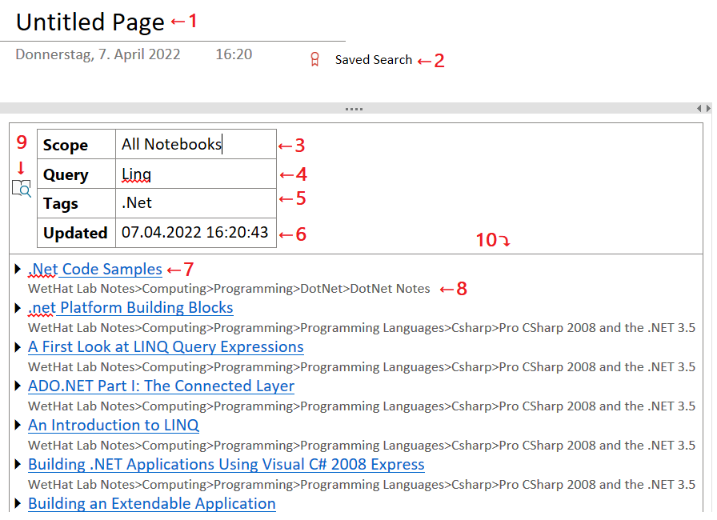

Saving Search Results to a OneNote Page
Search results obtained by the Find Pages can be saved
as active content to a new OneNote page in the current section using the
Save Search Result action from the drop-down menu
of the Pages search result panel.

The layout of a Saves Search
☝️ Numbered cells of the sample Saved Search are referenced by superscripts and list item indices.
The default title of a Saved Search. Can be customized by the user.
By default pages containing Saved Searches are marked with the Saved Search tag. This makes it easy to locate pages containing Saves Searches so that they can be updated. This tag can be removed with the Tag Pages dialog.
The search scope that was in effect when the search result saved by the
Save Search Resultaction in the Find pages dialog.⚠️ This cell is meant to be read-only. Any edits may cause unpredictable side effects!
The full-text query that was in effect when the search result was saved by the
Save Search Resultaction in the Find pages dialog.☝️ This cell can be edited. The changed full text search terms will take effect on next page update by the Update command or the Update action of the Tag Pages dialog.
The comma-separated list of refinement tags that was in effect when the search result was saved by the
Save Search Resultaction in the Find pages dialog.☝️ This cell can be edited. Changes in the tag list will take effect on next page update by the Update command or the Update action of the Tag Pages dialog.
☝️ The tag names in this cell are matched in a lenient way by ignoring the hash characters, casing, or spacing. E.g the tags
#softwaredevelopment,#SoftwareDevelopment,SoftwareDevelopment,Software Developmentare all treated as equivalent.The timestamp when the Saved Search waas created or last updated by the Update command or the Update action of the Tag Pages dialog.
A page link in the search result
The path in the OneNote page hierarchy leadinf to this page.
A OneNote tag marking the search configuration that was captured when the search result was saved by the
Save Search Resultaction of the Pages search result panel.⚠️ If this onenote tag is removed or changed the saved search can no longer be updated.
List of pages constituting the search result.
⚠️ This cell is is meant to be read-only. Any changes will be lost when on next update.